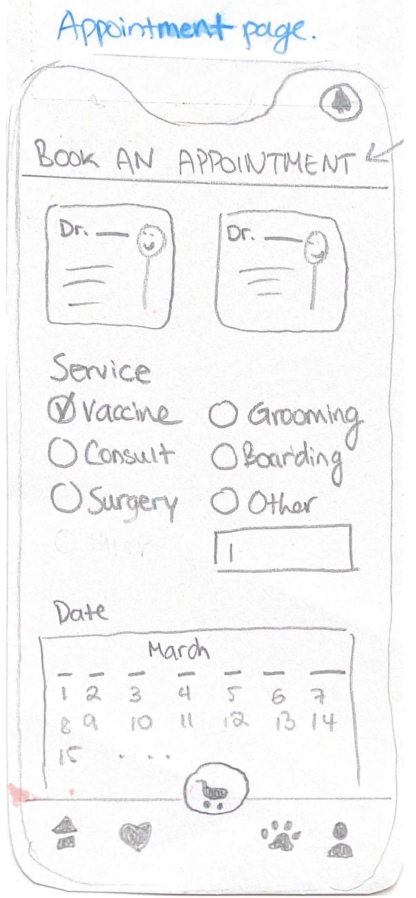
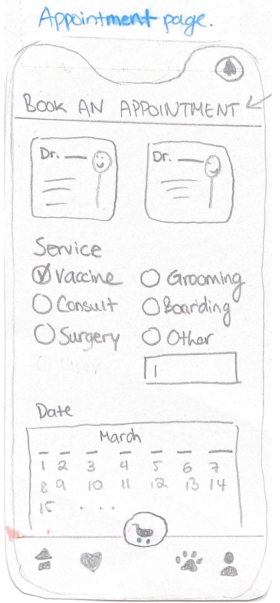
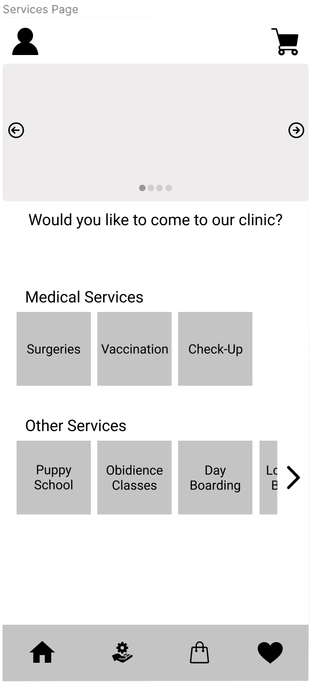
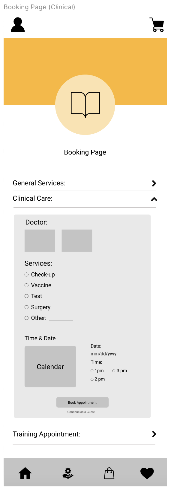
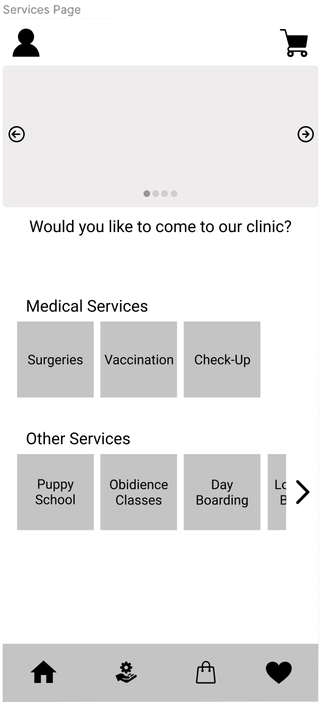
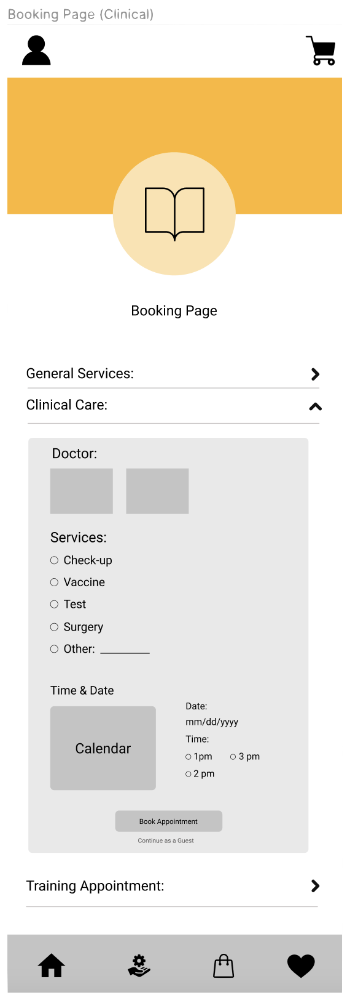

Sketchbook 
Adobe Illustrator 
Figma 
This phase consisted of each group member individually producing a few app icon designs, narrowing it down to one, and then coming together as a group to choose the best one. Below are my designs, from a quick rough sketch and rough vector designs to the final design. Although my design was not chosen, it was great practice to enhance my graphic design skills using Adobe Illustrator.
This phase involved researching good app design practices and taking inspiration from other apps and websites. Each group member was tasked with completing a series of sketches illustrating their vision of the app. Below you can see my sketches.
The login page is a standard login page which confirms the user's mental model of how to use it. The home page highlights important aspects, including clinic locations, services they provice, and call-to-action buttons leading to important pages in the app. The shop page displays a simple layout with filter options and a search bar at the top. Finally, the appointment page allows users to select features, such as the veterinarian they would like, the service they want, and a calendar for easy booking.


 

This phase involved collaboratively choosing our favourite elements from each of our low fidelity sketches and then working together to create medium fidelity prototypes in Figma.

 



We came together as a group and chose the following app icon design to represent our app.
We collaboratively worked to create the following pages for our canine clinic app.
 Home
Home